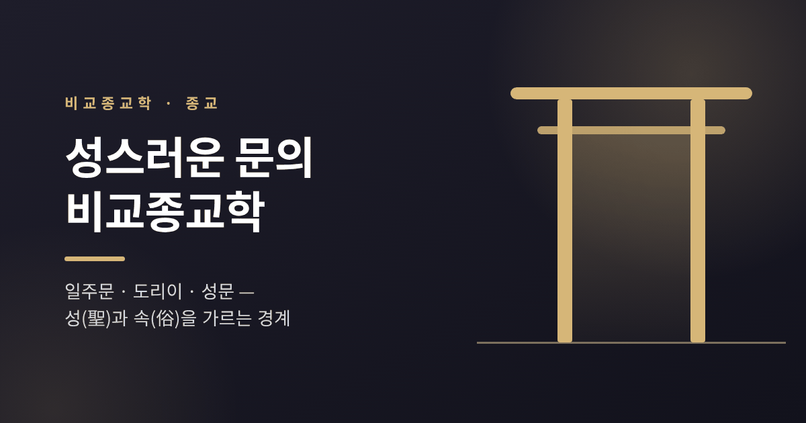
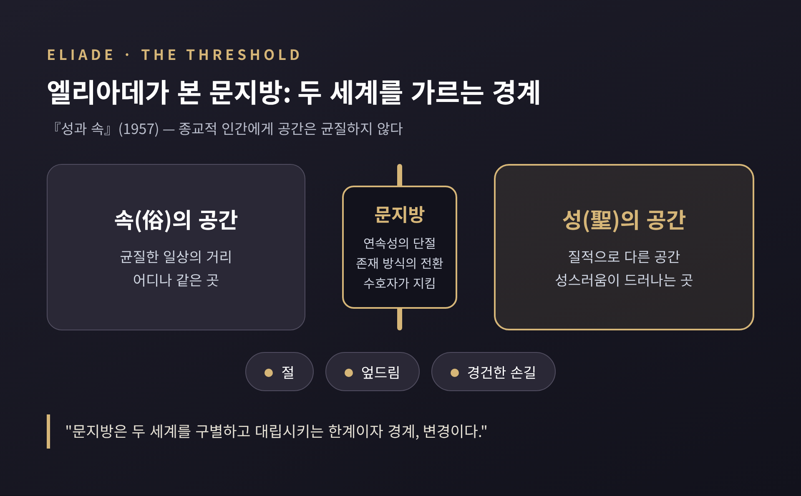
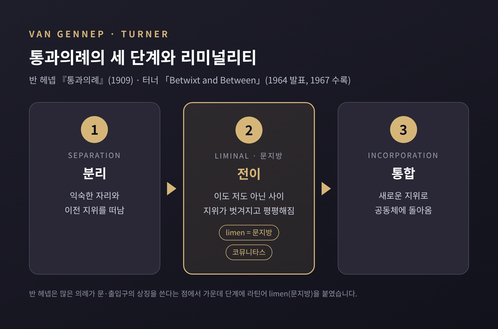
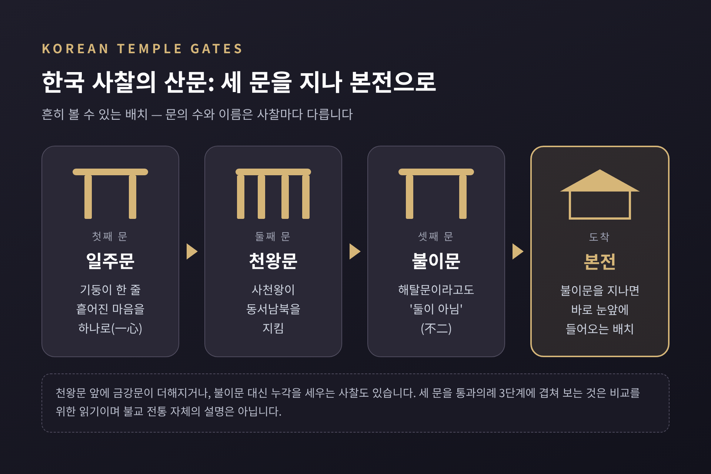
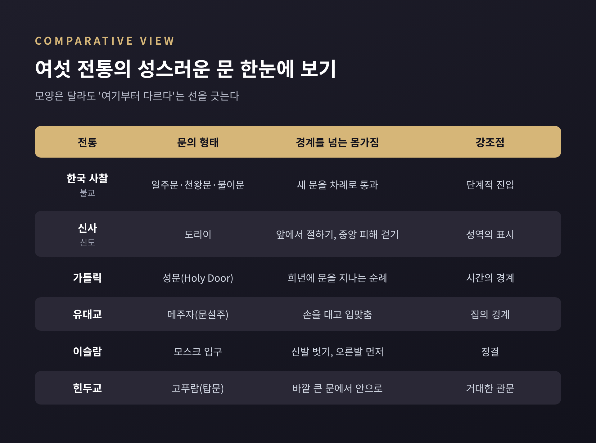
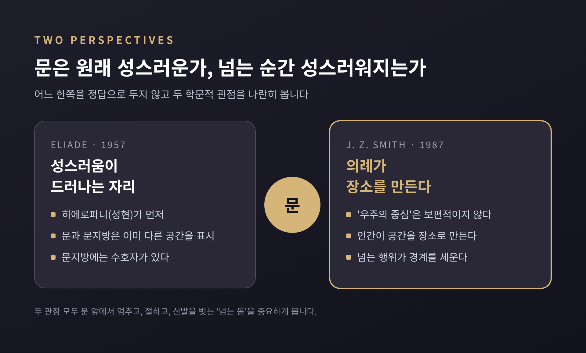

성스러운 문의 비교종교학 — 일주문·도리이·성문은 왜 성과 속의 경계가 되었나

이번 글에서는 여러 종교가 '문'과 '문지방'을 어떻게 다뤄 왔는지 비교해 보겠습니다. 한국 사찰의 일주문, 일본 신사의 도리이, 가톨릭 희년의 성문, 유대교의 메주자, 모스크 입장 예절, 힌두 사원의 고푸람까지 살펴봅니다.
먼저 세 줄로 요약해 두겠습니다.
- 종교학자 엘리아데는 문지방을 "두 세계를 구별하고 대립시키는 경계"로 보았습니다.
- 인류학자 반 헤넵과 터너는 그 '사이'의 시간, 곧 리미널리티(경계성)에 주목했습니다.
- 전통마다 형태는 달라도, 성스러운 문은 공통적으로 '멈춤'과 '몸가짐'을 요구합니다.
■ 같은 거리, 다른 공간 — 엘리아데의 문지방
출발점은 미르체아 엘리아데의 『성과 속』입니다. 1957년 독일어로 처음 나왔고, 1959년 영어로 옮겨졌습니다.
엘리아데는 첫 장을 이렇게 엽니다. 종교적 인간에게 공간은 균질하지 않다고. 어떤 곳은 끊기고, 어떤 곳은 질적으로 다르다는 뜻입니다.
그가 든 예는 소박합니다. 현대 도시 한복판의 교회입니다. 신자에게 그 교회는 바로 앞 거리와 '다른 공간'에 속한다고 그는 말합니다. 교회 안으로 열리는 문은 연속성이 끊기는 지점이고, 문지방은 두 존재 방식 사이의 거리를 드러냅니다.
그리고 이 글 전체를 꿰는 한 문장이 나옵니다.
"문지방은 두 세계를 구별하고 대립시키는 한계이자 경계, 변경이다."
엘리아데는 문지방에 '수호자'가 있다고도 썼습니다. 신이나 정령이 적대적인 존재의 출입을 막는다는 관념입니다. 그래서 문지방을 넘을 때는 절하거나, 엎드리거나, 경건하게 손을 대는 의례가 따른다고 했습니다.

■ '사이'에 머무는 시간 — 반 헤넵과 터너의 리미널리티
문지방을 공간이 아니라 시간의 문제로 본 사람들도 있습니다.
아르놀드 반 헤넵은 1909년 『통과의례』를 펴냈습니다. 그는 출생·성년·혼인·죽음 같은 의례가 세 단계를 거친다고 정리했습니다. 분리, 전이, 통합입니다.
흥미로운 것은 가운데 단계의 이름입니다. 반 헤넵은 라틴어 '리멘(limen)', 곧 '문지방'을 빌려 왔습니다. 많은 의례가 실제로 문과 출입구의 상징을 쓰기 때문이었습니다.
이 개념을 넓힌 사람이 빅터 터너입니다. 1964년 발표하고 1967년 『상징의 숲』에 실은 글 「Betwixt and Between」에서, 그는 리미널 단계를 '이도 저도 아닌 사이'로 묘사했습니다. 이 단계의 사람들은 이전 지위를 벗고 평평해집니다. 그 사이에서 생기는 독특한 동료애를 그는 '코뮤니타스'라고 불렀습니다.

물론 이 틀에도 이견은 있습니다. 터너가 1974년 내놓은 '리미노이드(지위 변화가 없는 여가형 경험)' 구분에 대해, 인류학자 오베예세케레는 전통 사회와 산업 사회를 지나치게 인위적으로 가른다고 비판했습니다. 용어 문제가 아직 정리되지 않았다는 평가도 있습니다.
■ 한국 사찰의 세 문 — 마음을 모으고, 점검하고, 둘을 넘다
이제 사례로 넘어가 보겠습니다. 가장 가까운 예는 산사 입구의 문들입니다.
일주문은 대개 사찰의 첫 문입니다. 기둥이 한 줄로 늘어서 있어 일주(一柱)문이라 부릅니다. 흔히 일심(一心), 곧 흩어진 마음을 하나로 모으라는 뜻으로 풀이합니다. 기둥이 정면에서 하나로 겹쳐 보이는 데서 '보이는 것이 전부가 아니다'라는 가르침을 읽는 해설도 있습니다.
대부분 기둥이 둘이지만, 부산 범어사 조계문은 넷입니다. 1614년 무렵 지어진 것으로 추정되며 보물로 지정되어 있습니다. 일주문은 대체로 조선시대 이른바 삼문 체계가 자리 잡으며 나타났다고 봅니다.
천왕문에는 사천왕이 섭니다. 동쪽 지국천왕, 서쪽 광목천왕, 남쪽 증장천왕, 북쪽 다문천왕입니다. 고대 인도 민간신앙에서 비롯해 불법의 수호신이 된 존재들입니다. 엘리아데가 말한 '문지방의 수호자'가 건축으로 구현된 모습이라 해도 무리가 없을 듯합니다.
사천왕상 자체는 통일신라 때부터 보입니다. 다만 큰 규모의 천왕문 건물은 임진왜란과 병자호란 이후 집중적으로 세워졌다는 분석이 있습니다. 승병장 출신 승려들이 건립을 주도한 경우가 많았다고 합니다.
불이문은 흔히 마지막 문입니다. 해탈문이라고도 부릅니다. '불이(不二)'는 나와 너, 삶과 죽음, 번뇌와 깨달음이 둘이 아니라는 가르침입니다. 불이문을 지나면 본전이 바로 눈앞에 들어오도록 배치하는 경우가 많습니다.

한 가지 짚어 둘 점이 있습니다. 사찰마다 문의 수와 이름은 다릅니다. 금강문이 더해지기도 하고, 불이문 대신 누각을 세우기도 합니다. 일주문을 '불이문'이라고 부르는 설명도 있어, 명칭은 지역과 사찰의 전통에 따라 달라진다고 보는 편이 정확합니다.
세 문을 반 헤넵의 세 단계에 겹쳐 보는 것은 비교를 위한 이 글의 읽기입니다. 불교 전통 자체가 그렇게 설명하는 것은 아닙니다.
■ 도리이 — 문이 없는 문
일본 신사의 도리이는 문짝이 없습니다. 기둥 둘과 가로대 둘이 전부입니다. 그런데도 그 아래를 지나는 순간 공간의 성격이 바뀐다고 여깁니다.
일본 고쿠가쿠인대의 『신도 사전』은 도리이가 오늘날의 기능으로 볼 때 '속과 성의 영역 구분'을 표현한다고 설명합니다. 본전이 없는 신사에도 도리이는 있습니다. 여러 겹으로 서 있는 경우, 바깥의 큰 '첫 번째 도리이'에서 안쪽으로 갈수록 신성함의 정도가 높아진다고 봅니다.
기원은 정설이 없습니다. 일본 고유의 것이라는 설과 외래설이 맞섭니다. 인도의 토라나와 연결하는 견해도, 중국 대륙의 문과 연결하는 견해도 있습니다. 어원 역시 '새의 횃대'설과 '지나서 들어간다'설이 함께 거론됩니다.
참배 예절에는 경계 의식이 그대로 담겨 있습니다. 도리이 앞에서 한 번 절하고, 길 한가운데를 피해 걷습니다. 아이치현 공식 관광 안내는 그 중앙을 '세이추(正中)'라 부르며 신을 위한 자리라고 설명합니다. 손과 입을 씻는 정화 절차도 이 경계 안쪽에서 이루어집니다.
■ 성문 — 25년마다 열리는 시간의 문
가톨릭의 성문(Holy Door)은 공간보다 시간의 경계에 가깝습니다.
희년, 곧 성년 전통은 1300년 교황 보니파시오 8세에게서 시작했습니다. 주기는 100년에서 50년, 33년을 거쳐 지금의 25년이 되었습니다. 성문이 처음 기록에 등장하는 것은 1423년입니다. 마르티노 5세가 라테라노 대성전에서 문을 열었다는 15세기 문헌이 근거입니다. 1499년 성탄, 알렉산데르 6세는 이를 성 베드로 대성전 등으로 넓혔습니다.
평소 성문은 안쪽에서 벽돌로 막혀 있습니다. 1500년부터 1974년까지는 교황이 벽을 두드려 허무는 의식이 이어졌습니다. 2000년 희년부터는 미리 벽을 걷어 내고 교황이 손으로 문을 미는 방식으로 간소해졌습니다.
가장 최근은 2025년 '희망의 희년'이었습니다.
- 2024년 12월 24일, 프란치스코 교황이 성 베드로 대성전 성문을 다섯 번 두드린 뒤 열었습니다.
- 12월 26일에는 로마 레비비아 교도소에도 성문이 열렸습니다. 교도소에 성문이 열린 것은 처음이었습니다.
- 2026년 1월 6일, 후임 레오 14세가 성문을 닫았습니다. 바티칸은 순례객이 3,340만 명을 넘었다고 집계했습니다.
교회는 요한복음 10장 9절 "나는 문이다"를 들어, 문을 지나는 일을 회심의 표현으로 설명합니다. 닫는 날 레오 14세는 "이 성문은 닫히지만 당신 자비의 문은 닫히지 않습니다"라고 말했습니다. 다음 성문은 2033년 특별 희년에 열릴 예정입니다.
■ 메주자·모스크·고푸람 — 몸이 기억하는 경계
예전에는 성스러운 문이 신전과 성당의 것이라고만 생각하기 쉬웠습니다. 사례를 모아 보면, 집 현관과 신발 한 켤레에도 경계가 있습니다.
유대교의 메주자는 '문설주'라는 뜻의 히브리어입니다. 쉐마(신명기 6:4–9, 11:13–21)를 양피지에 손으로 써서 작은 함에 넣고, 들어갈 때 오른쪽 문설주의 위 3분의 1 지점에 붙입니다. 많은 사람이 지나면서 손으로 메주자를 만지고 그 손에 입을 맞춥니다.
비스듬히 다는 관습에는 사연이 있습니다. 11세기 랍비 라시는 세로로, 그의 손자 라베누 탐은 가로로 달아야 한다고 보았습니다. 훗날 비스듬히 다는 절충안이 나왔고, 아슈케나지 공동체의 관습이 되었습니다. 세파르디 공동체는 지금도 세로로 답니다. 하나의 문설주 위에 해석의 역사가 쌓여 있는 셈입니다.
모스크에서는 기도 공간에 들어가기 전 신발을 벗습니다. 바닥과 카펫 위에서 절하며 기도하기 때문에 청결을 지키는 것입니다. 들어설 때 "저를 위해 당신 자비의 문들을 열어 주소서", 나설 때 "당신의 은혜를 구합니다"라고 기도하는 전승이 사히흐 무슬림에 전합니다.
오른발로 들어가고 왼발로 나오는 관습도 있습니다. 부하리 하디스집은 이 내용을 장 제목으로 두고, 예언자가 좋은 일은 오른쪽부터 하기를 즐겼다는 전승을 싣습니다. 한편 오른발을 직접 언급한 전승보다는 '존중할 일은 오른쪽부터'라는 원칙과 학자들의 견해에 근거한 권장 예절로 설명하는 입장도 있습니다.
힌두 사원의 고푸람은 남인도 드라비다 양식의 거대한 탑문입니다. 흔히 사원에서 가장 높은 구조물입니다. 브리태니커에 따르면 12세기 중엽부터 커지기 시작해, 결국 중앙 성소보다 훨씬 거대해졌습니다. 가장 큰 고푸람은 대개 가장 바깥 담에 섭니다. 스리랑감 랑가나타스와미 사원의 라자고푸람은 높이 73m로, 1987년에 완공되었습니다.

■ 문은 원래 성스러운가, 넘는 순간 성스러워지는가
비교를 마치면 하나의 질문이 남습니다. 문은 본래 성스러운 곳에 세워진 것일까요, 아니면 문을 넘는 행위가 그곳을 성스럽게 만드는 것일까요.
엘리아데의 시각에서는 성스러움이 스스로 드러나는 '히에로파니'가 먼저입니다. 문과 문지방은 이미 다른 그 공간을 표시합니다.
종교학자 조너선 Z. 스미스는 1987년 『To Take Place』에서 다른 입장을 내놓았습니다. 엘리아데가 말한 '우주의 중심' 같은 주제가 모든 종교에 보편적이지는 않다고 반박했고, 인간이 공간을 '장소'로 만들며 의례가 성스러움을 만든다는 관점을 폈습니다. 다만 이 관점이 신앙 공동체의 자기 이해와 맞지 않는다고 보는 반론도 있습니다.

어느 쪽이 옳은지 판정하는 것은 이 글의 몫이 아닙니다. 흥미로운 것은 두 입장이 모두 '넘는 몸'을 중요하게 본다는 점입니다. 절하고, 신발을 벗고, 오른발을 내딛고, 손을 대고, 다섯 번 두드리는 동작들 말입니다.
정리하면 이렇습니다.
일주문·도리이·성문·메주자·모스크 입구·고푸람은 모양도 교리도 다릅니다. 그러나 모두 '여기서부터는 다르다'는 선을 긋고, 그 선 앞에서 잠시 멈추게 합니다.
결국 성스러운 문이 가르는 것은 돌과 나무가 아니라 — 문 앞에서 달라지는 사람의 마음가짐일지도 모릅니다.
다음에 산사 일주문이나 오래된 성당 문 앞에 서신다면, 한 걸음 내딛기 전에 잠깐 멈춰 보시길 권합니다. 그 짧은 멈춤이 수천 년 인류가 지켜 온 문지방의 감각과 닿아 있을 것입니다.
참고 자료
- Mircea Eliade, The Sacred and the Profane, Ch.1 "Sacred Space and Making the World Sacred" (영역본 게재본) — https://www.hermetik-international.com/en/media-library/rosicrucianism/mircaeda-eliade-sacred-profane/01-chapter-01-sacred-space-making-world-sacred/
- Rollins College 강의 노트, The Sacred & Profane — https://myweb.rollins.edu/jsiry/the_Sacred%20&%20ProfaneEliade.htm
- LibraryThing, The Sacred and the Profane 서지 — https://www.librarything.com/work/28142
- Theopolis Institute, J.Z. Smith To Take Place 서평 — https://theopolisinstitute.com/to-take-place-toward-theory-in-ritual/
- Wikipedia, Liminality — https://en.wikipedia.org/wiki/Liminality
- Encyclopedia.com, Liminality — https://www.encyclopedia.com/social-sciences-and-law/sociology-and-social-reform/sociology-general-terms-and-concepts/liminality
- 서울신문, 임진왜란의 산물 천왕문 (2015) — https://m.seoul.co.kr/news/2015/08/11/20150811500085
- 매일신문 — https://www.imaeil.com/page/view/2012030216252159214
- 경북매일 — https://kbmaeil.com/article/202007080282857
- Korean Temple Guide, Iljumun — https://koreantempleguide.com/?p=1445
- 아시아경제(영문), The First Gateway to the Buddha World (2023) — https://www.asiae.co.kr/en/article/2023082511352423161
- Wikipedia, Burimun — https://en.wikipedia.org/wiki/Burimun
- Britannica, torii — https://www.britannica.com/topic/torii
- Kokugakuin University, Encyclopedia of Shinto "Torii" — https://d-museum.kokugakuin.ac.jp/eos/detail/?id=9635
- 일본정부관광국, Shrine and Temple Traditions — https://www.japan.travel/en/guide/shrine-and-temple-traditions/
- Aichi Now, Etiquette when visiting temples and shrines — https://www.aichinow.pref.aichi.jp/en/travelkits/abc_temples/
- Wikipedia, Holy door — https://en.wikipedia.org/wiki/Holy_door
- National Catholic Register, 5 Holy Doors — https://ncregister.com/news/5-holy-doors-what-every-catholic-should-know-ahead-of-jubilee-2025
- St. Peter's Basilica info, The Holy Door — https://stpetersbasilica.info/Interior/HolyDoor/HolyDoor.htm
- USCCB, Pope opens Holy Door of St. Peter's Basilica (2024) — https://www.usccb.org/news/2024/pope-opens-holy-door-st-peters-basilica-launching-jubilee-hope
- Jubilee 2025 공식 사이트, Rebibbia Holy Door (2024) — https://www.iubilaeum2025.va/en/notizie/comunicati/2024/giubileo-stamattina-papa-francesco-ha-aperto-porta-santa-carcere-rebibbia.html
- EWTN News, Pope Leo XIV closes St. Peter's Holy Door (2026) — https://www.ewtnnews.com/vatican/pope-leo-xiv-closes-st-peter-s-holy-door-concluding-jubilee-of-hope
- Chabad.org, Mezuzah facts — https://www.chabad.org/4444490
- Chabad.org, Mezuzah Placement — https://www.chabad.org/library/article_cdo/aid/225405/jewish/Mezuzah-Placement.htm
- My Jewish Learning, Why is the mezuzah slanted? — https://myjewishlearning.com/article/ask-the-expert-slanted-mezuzah/
- Islamic Association of Raleigh, Visiting a Mosque — https://archive.raleighmasjid.org/islam/visiting-mosque.html
- HadeethEnc, Sahih Muslim 713 — https://hadeethenc.com/en/browse/hadith/65092
- Sunnah.com, Sahih al-Bukhari 426 — https://sunnah.com/bukhari:426
- IslamQA.org, Fiqh of feet — https://islamqa.org/hanafi/qibla-hanafi/43760/fiqh-of-feet-mosques-toilets-and-the-principle-2/
- Wikipedia, Gopuram — https://en.wikipedia.org/wiki/Gopuram
- Britannica, gopura — https://www.britannica.com/technology/gopura
- Crispin Branfoot, "The Tamil gopura" (Ars Orientalis, 2015) — https://eprints.soas.ac.uk/21449